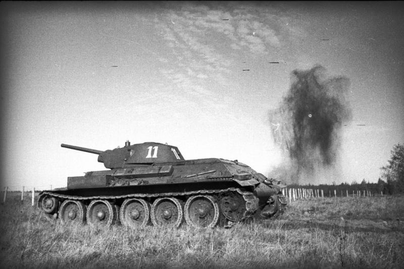
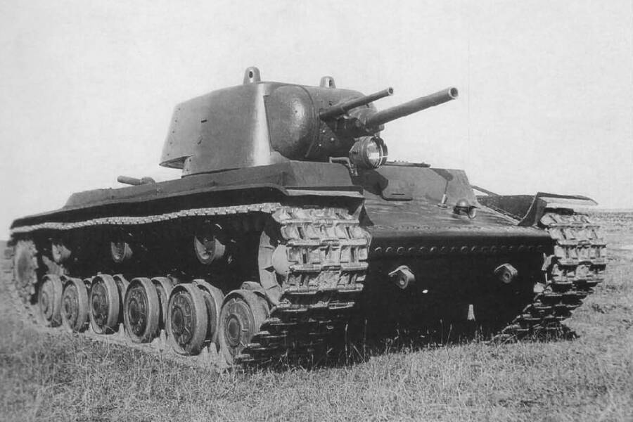
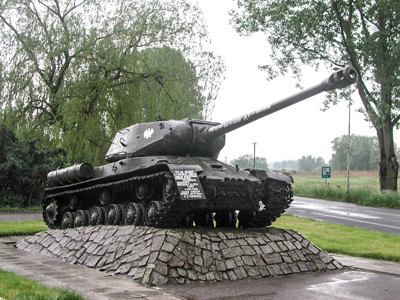
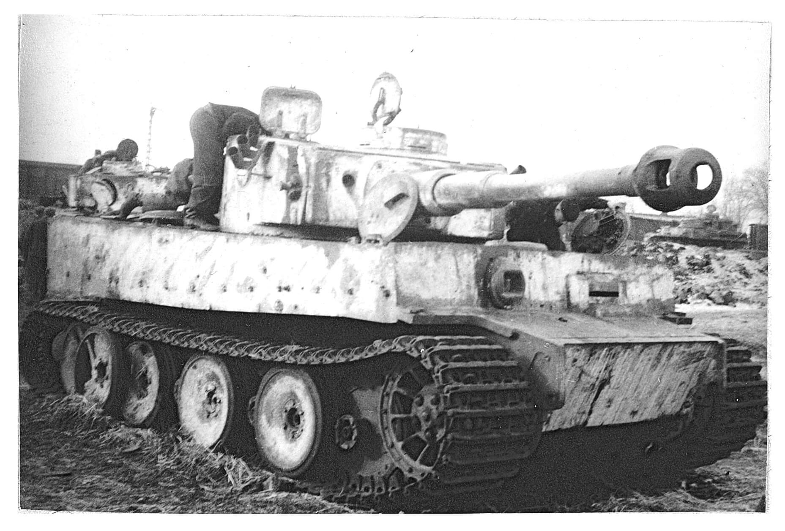
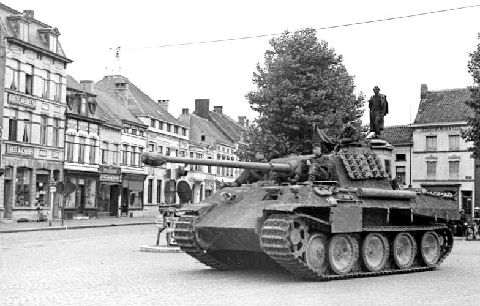
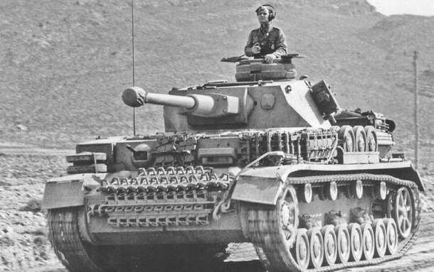
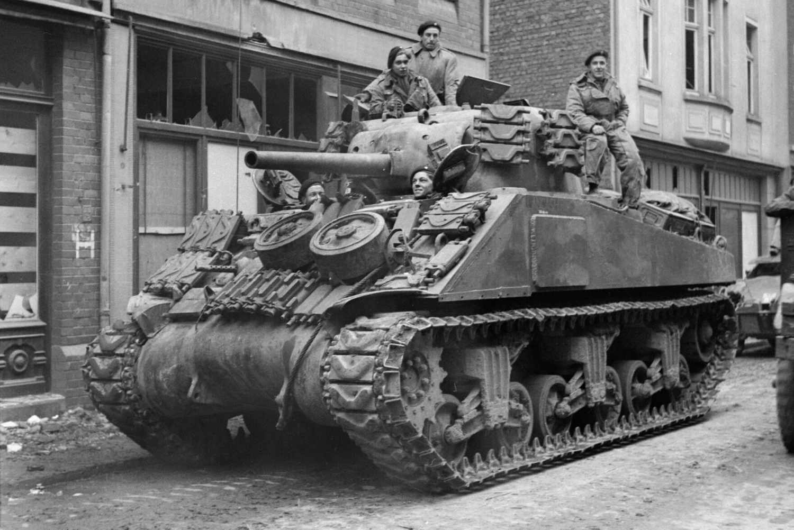
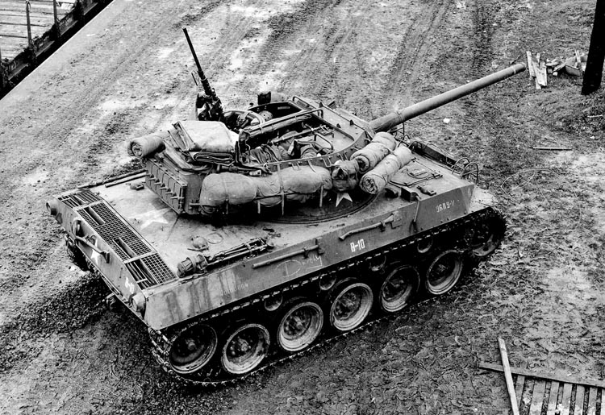
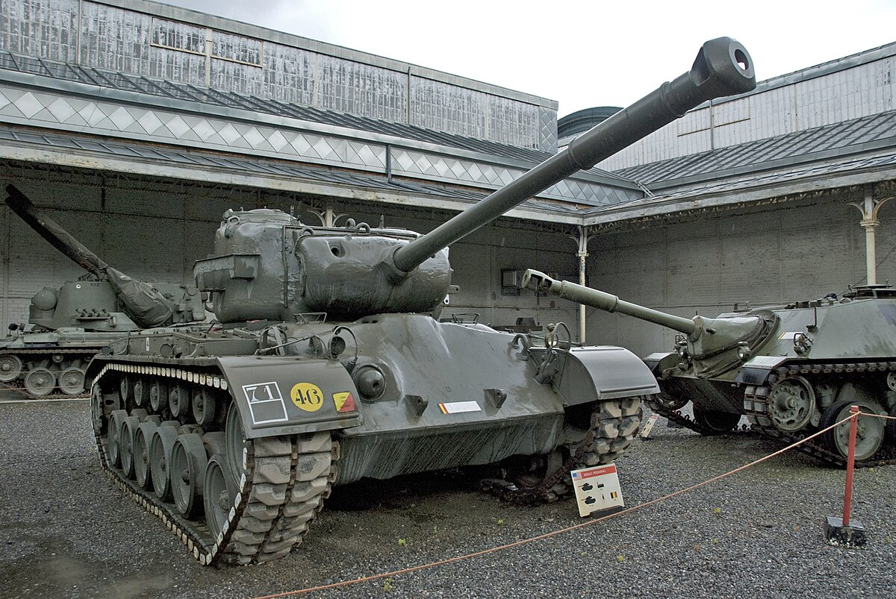

World War II Tanks
This was their finest hour. Never in history have so many tanks and AFV’s been built and fought all around the globe. From the snowy steppes of Russia to the soaky jungles of New Guinea, from the sands of Egypt to the grassy plains of Western Europe, the tanks were wherever soldiers were to be seen. They fought in most battles of the Second World War, some of these have become legendary like Kursk, one of the largest armored clashes in the history of mankind. Some new tactics were developed during the interwar and refined, such as the “Blitzkrieg” which proved decisive and changed the way tanks would be used thereafter.

Comparison Table
Here is a comparison of some tank characteristics. But even though one might have superior specs, victory often went not to the strongest, but to those who believed harder and understood better what it takes to win.
| Tank | Nation | Armor (mm) | Main Gun | Speed (km/h) | Weight (tons) | Crew | Production |
|---|---|---|---|---|---|---|---|
| T-34 | USSR | 45 | 76.2mm | 55 | 26.5 | 4 | 80,000 |
| Tiger I | Germany | 100 | 88mm | 40 | 57 | 5 | 1,347 |
| Sherman | USA | 76 | 75mm | 48 | 30 | 5 | 49,000 |
Choose a Tank
USSR Tanks

The T-34 is a Soviet medium tank developed in the late 1930s and became one of the key armored vehicles of the USSR during the Great Patriotic War. First used in combat in 1941, the T-34 was distinguished by its successful combination of mobility, firepower and protection. The sloping hull armor and powerful 76.2 mm (later 85 mm) caliber cannon provided it with significant advantages over most German tanks at an early stage of the war. The production of the T-34 was organized on a large scale, which allowed the Soviet Union to quickly replenish losses and saturate the front with military equipment. By 1945, more than 57,000 units had been produced. The T-34 had a significant impact on the development of tank construction in the world and is considered one of the most effective tanks of the Second World War.

The KV-1 (Klim Voroshilov-1) is a heavy tank of the Red Army, which entered service in 1939. It featured powerful armor (up to 75 mm in early versions) and armament in the form of a 76.2 mm cannon. At the initial stage of the Great Patriotic War, the KV-1 was practically invulnerable to most enemy anti-tank weapons, which made it a valuable element of defense. However, low speed, overloaded transmission and limited maneuverability reduced its combat effectiveness in dynamic conditions. Since 1942, it has gradually begun to give way to more advanced models.

The IS-2 (Joseph Stalin-2) is a Soviet heavy tank developed in 1943 as a response to the appearance of heavy tanks such as the Tiger. The main armament of the IS-2 was a 122 mm cannon capable of hitting enemy fortifications and armored vehicles at long distances. The frontal armor reached 120 mm, which provided high protection from most enemy shells. The IS-2 was actively used in the assault operations of 1944-1945, especially during the breakthrough of fortified lines. He became a symbol of the power of the Soviet tank forces at the final stage of the war.
German Tanks

Tiger I is a heavy tank of the Wehrmacht, which entered service in 1942. It was distinguished by powerful frontal armor (up to 100 mm) and effective armament — the 88-mm KwK 36 cannon, capable of hitting most Allied tanks at long distances. The Tiger I was difficult and expensive to manufacture, characterized by low reliability and high fuel consumption. In total, about 1,350 units were produced. It was used in limited quantities, but had a significant psychological and tactical impact.

The Panther is a medium tank adopted in 1943 as a response to the Soviet T-34. It combined high firepower (KwK 42 L/70 75 mm cannon), sloping armor and good maneuverability. At the same time, it maintained a relatively high speed for its mass. The Panther has the best performance balance among German tanks, but suffered from technical problems in the early series. In total, about 6,000 units were produced. It was used on all fronts until the end of the war.

The Panzer IV is one of the most massive tanks in Nazi Germany, produced from 1937 to 1945. It was originally designed as a fire support tank with a 75 mm short-barreled cannon, but was repeatedly upgraded during the war. Later modifications received the KwK 40 long-barreled cannon, reinforced armor and shields against cumulative ammunition. It was a universal medium tank that formed the basis of the Wehrmacht tank units. In total, more than 8,500 units were produced.
USA Tanks

The M4 Sherman was the main medium tank of the US Army in World War II, mass—produced since 1942. It was characterized by reliability, simple design and high maintainability. It was armed with a 75-mm or 76-mm cannon, later versions also with a 105—mm howitzer. The main advantage was the mass production: over 49 thousand units were produced. It was inferior in armor and firepower to German heavy tanks, but it compensated for this with numbers, mobility and efficient logistics.

The M18 Hellcat is an American self—propelled anti-tank launcher developed in 1943. The fastest armored vehicle of the Second World War: maximum speed — up to 90 km/ h. It is armed with a 76 mm cannon, effective against most German medium tanks. It was poorly armored, but highly mobile and was well suited for ambushes and maneuverable battles. It has been used in Europe since 1944, having proven its effectiveness in raids and defense.

The M26 Pershing is a heavy (according to the American classification) tank that arrived in limited quantities in Europe in 1945. He was armed with a 90mm cannon that could fight Tigers and Panthers on equal terms. The armor and armament corresponded to the level of the late war, but the tank arrived too late to have a serious impact on the course of the fighting. It was a transitional link between the medium tanks of the war and the post-war main battle tanks.